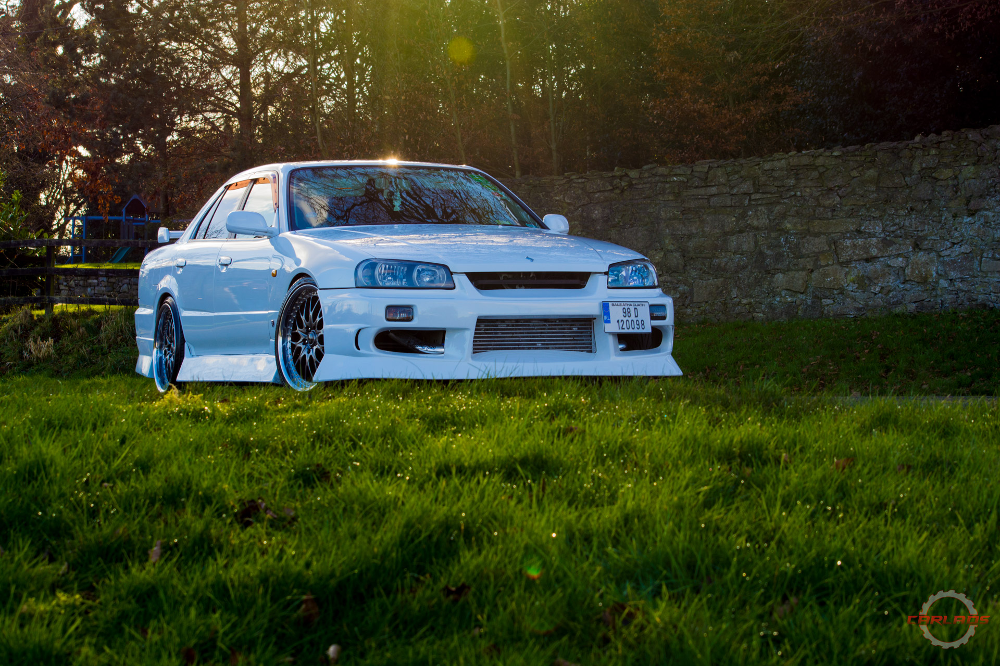
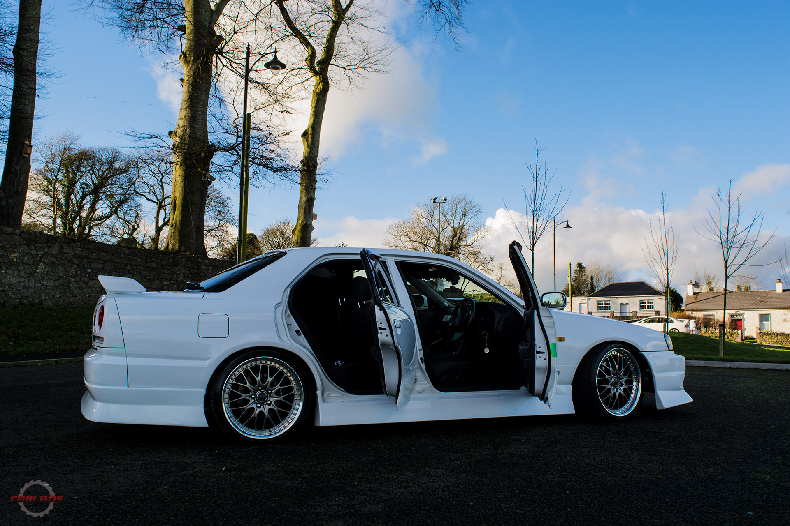
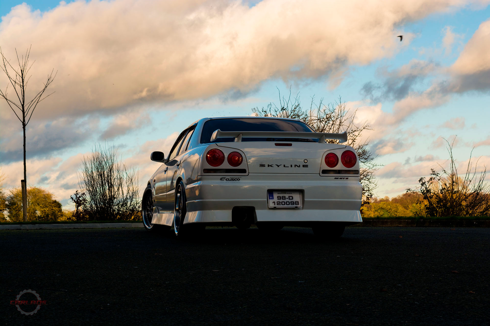
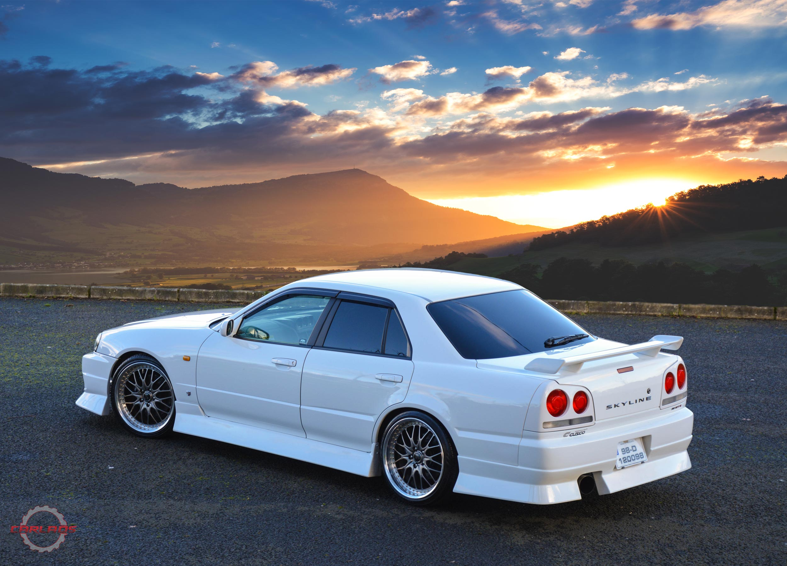

Nissan Skyline R34 - Cooler than penguin piss!
We all know the Nissan Skyline R34, the iconic car that became every young lad's dream after the "Fast and Furious" movies. This being the reason why we aren't going to write any general stuff about it. But not all knew them back in the day and and certainly we didn't know there was a 4-door version of this car.
Why would you even make a 4 door saloon out of this?....the answer should be: "why not?!". The funny things is, in later years, people started appreciating more the 4 door version just because it is a bit weird, because you might get the chance to see an R34 in Ireland and the UK, but a 4 door is a rare sight.
And this is why Mick bought this particular R34 about 3 years ago.
The car arrived in Ireland in very good condition and even with some extras, as a bonus, from the last lady owner. But Mick wasn't 100% happy. He removed the pink window switches, pink ashtray and pedals and all the "Hello Kitty" stickers, including the one so artistically placed right smack in the middle of the steering wheel. After that, the car received a good paint correction and headlight restoration by Myck's own company ( Lightech Mobile Headlight Restoration).
In his own words:
"I was looking for a clean Skyline R34 for a long time. I liked the 4door over the coupe better because it was just different, there was just something about it, and the fact that there weren't too many in the country at the time, helped even more in convincing myself that this is what I wanted. And boy am I happy now..."
We asked Mick what's the story behind the "Cooler than penguin piss!" sticker that you can see on one of the intercooler pipes, he told us that there is nothing special, just bought the sticker at Japfest in Mondello and figured it should go on the interCOOLER (get it?). It does bring back a nice memory:
"There I was, at Japfest in 2015, minding my own business, not paying too much attention to what was going on while trying to put this sticker on, while I heard something on the speakers about me. It turned out, it was an announcement that I won the "Show & Shine". A bit later, the car was "Best Jap Car" in a show held in Borris-in-Ossory, Laois."
It was a pleasure making the article about this car. It's not everyday you get to see such a well kept Skyline. Thank you Mick for taking the time to talk with us.
